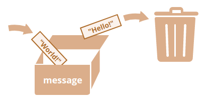

Изначально JavaScript был создан, чтобы «сделать веб-страницы живыми».
Программы на этом языке называются скриптами. Они могут встраиваться в HTML и выполняться автоматически при загрузке веб-страницы.
Скрипты распространяются и выполняются, как простой текст. Им не нужна специальная подготовка или компиляция для запуска.
Это отличает JavaScript от другого языка – Java.
Почему JavaScript?
Когда JavaScript создавался, у него было другое имя – «LiveScript». Однако, язык Java был очень популярен в то время, и было решено,
что позиционирование JavaScript как «младшего брата» Java будет полезно.
Со временем JavaScript стал полностью независимым языком со своей собственной спецификацией, называющейся ECMAScript, и сейчас не имеет
никакого отношения к Java.
Сегодня JavaScript может выполняться не только в браузере, но и на сервере или на любом другом устройстве, которое имеет специальную
программу, называющуюся «движком» JavaScript.
У браузера есть собственный движок, который иногда называют «виртуальная машина JavaScript».
Эти названия полезно знать, так как они часто используются в статьях для разработчиков. Мы тоже будем их использовать. Например, если «функциональность X поддерживается V8», тогда «Х», скорее всего, работает в Chrome и Opera.
Как работают движки?
Движки сложны. Но основы понять легко.
Движок (встроенный, если это браузер) читает («парсит») текст скрипта.
Затем он преобразует («компилирует») скрипт в машинный язык.
После этого машинный код запускается и работает достаточно быстро.
Движок применяет оптимизации на каждом этапе. Он даже просматривает скомпилированный скрипт во время его работы, анализируя
проходящие через него данные, и применяет оптимизации к машинному коду, полагаясь на полученные знания. В результате скрипты
работают очень быстро.
Современный JavaScript – это «безопасный» язык программирования. Он не предоставляет низкоуровневый доступ к памяти или процессору,
потому что изначально был создан для браузеров, не требующих этого.
Возможности JavaScript сильно зависят от окружения, в котором он работает. Например, Node.JS поддерживает функции чтения/записи
произвольных файлов, выполнения сетевых запросов и т.д.
В браузере для JavaScript доступно всё, что связано с манипулированием веб-страницами, взаимодействием с пользователем и веб-сервером.
Например, в браузере JavaScript может:
Возможности JavaScript в браузере ограничены ради безопасности пользователя. Цель заключается в предотвращении доступа
недобросовестной веб-страницы к личной информации или нанесения ущерба данным пользователя.
Примеры таких ограничений включают в себя:
Как минимум, три сильные стороны JavaScript:
Синтаксис JavaScript подходит не под все нужды. Разные люди хотят иметь разные возможности. Это естественно, потому что проекты разные и требования к ним тоже разные. Так, в последнее время появилось много новых языков, которые транспилируются (конвертируются) в JavaScript, прежде чем запустятся в браузере.
Современные инструменты делают транспиляцию очень быстрой и прозрачной, фактически позволяя разработчикам писать код на другом языке, автоматически преобразуя его в JavaScript «под капотом».
Примеры таких языков:
Итак, сначала давайте посмотрим, как выполнить скрипт на странице.
Программы на JavaScript могут быть вставлены в любое место HTML-документа с помощью тега <script>.
<!DOCTYPE HTML>
<html>
<body>
<p>Перед скриптом...</p>
<script>
alert( 'Привет, мир!' );
</script>
<p>...После скрипта.</p>
</body>
</html>
Тег <script> имеет несколько атрибутов, которые редко используются, но всё ещё могут встретиться в старом коде:
Атрибут type: <script type=…></script>
Старый стандарт HTML, HTML4, требовал наличия этого атрибута в теге <script>. Обычно он имел значение
type="text/javascript". На текущий момент этого больше не требуется. Более того, в современном стандарте
HTML смысл этого атрибута полностью изменился. Теперь он может использоваться для JavaScript-модулей.
Атрибут language: <script language=…>
Этот атрибут должен был задавать язык, на котором написан скрипт. Но так как JavaScript является языком по умолчанию, в этом
атрибуте уже нет необходимости.
Обёртывание скрипта в HTML-комментарии.
В очень древних книгах и руководствах вы сможете найти комментарии внутри тега <script>, например, такие:
<script type="text/javascript"><!--
...
//--></script>
Этот комментарий скрывал код JavaScript в старых браузерах, которые не знали, как обрабатывать тег <script>.
Поскольку все браузеры, выпущенные за последние 15 лет, не содержат данной проблемы, такие комментарии уже не нужны. Если они есть,
то это признак, что перед нами очень древний код.
Если у вас много JavaScript-кода, вы можете поместить его в отдельный файл.
Файл скрипта можно подключить к HTML с помощью атрибута src:
<script src="/path/to/script.js"></script>
Здесь /path/to/script.js – это абсолютный путь до скрипта от корня сайта.
Также можно указать относительный путь от текущей страницы. Например, src="script.js" или
src="./script.js" будет означать, что файл "script.js" находится в текущей папке.
Можно указать и полный URL-адрес. Например:
<script src="https://cdnjs.cloudflare.com/ajax/libs/lodash.js/3.2.0/lodash.js"></script>
Для подключения нескольких скриптов используйте несколько тегов:
<script src="/js/script1.js"></script>
<script src="/js/script2.js"></script>
…
Если атрибут src установлен, содержимое тега script будет игнорироваться.
<script src="file.js">
alert(1); // содержимое игнорируется, так как есть атрибут src
</script>
Инструкции – это синтаксические конструкции и команды, которые выполняют действия.
// Этот однострочный комментарий
/*
Это многострочный комментарий
*/
Переменная – это «именованное хранилище» для данных. Мы можем использовать переменные для хранения товаров, посетителей и других данных.
Для создания переменной в JavaScript используйте ключевое слово let.
Приведённая ниже инструкция создаёт (другими словами: объявляет или определяет) переменную с именем «message»:
let message;
Теперь можно поместить в неё данные, используя оператор присваивания =:
let message;
message = 'Hello'; // сохранить строку
Строка сохраняется в области памяти, связанной с переменной. Мы можем получить к ней доступ, используя имя переменной:
let message;
message = 'Hello!';
alert(message); // показывает содержимое переменной
Для краткости можно совместить объявление переменной и запись данных в одну строку:
let message = 'Hello!'; // определяем переменную и присваиваем ей значение
alert(message); // Hello!
Мы также можем объявить несколько переменных в одной строке:
let user = 'John', age = 25, message = 'Hello';
Такой способ может показаться короче, но мы не рекомендуем его. Для лучшей читаемости объявляйте каждую переменную на
новой строке. Многострочный вариант немного длиннее, но легче для чтения:
let user = 'John';
let age = 25;
let message = 'Hello';
Некоторые люди также определяют несколько переменных в таком вот многострочном стиле:
let user = 'John',
age = 25,
message = 'Hello';
…Или даже с запятой в начале строки:
let user = 'John',
age = 25,
message = 'Hello';
В старых скриптах вы также можете найти другое ключевое слово: var вместо let:
var message = 'Hello';
Ключевое слово var – почти то же самое, что и let. Оно объявляет переменную, но немного по-другому, «устаревшим» способом.
Мы легко поймём концепцию «переменной», если представим её в виде «коробки» для данных с уникальным названием на ней.
Например, переменную message можно представить как коробку с названием "message" и значением "Hello!" внутри:
var message = 'Hello';
Мы можем положить любое значение в коробку.
let message;
message = 'Hello!';
message = 'World!'; // значение изменено
alert(message);
При изменении значения старые данные удаляются из переменной:

В JavaScript есть два ограничения, касающиеся имён переменных:
let userName;
let test123;
Если имя содержит несколько слов, обычно используется верблюжья нотация, то есть, слова следуют одно за другим,
где каждое следующее слово начинается с заглавной буквы: myVeryLongName.
let $ = 1; // объявили переменную с именем "$"
let _ = 2; // а теперь переменную с именем "_"
alert($ + _); // 3;
Примеры неправильных имён переменных:
let 1a; // не может начинаться с цифры
let my-name; // дефис '-' не разрешён в имени